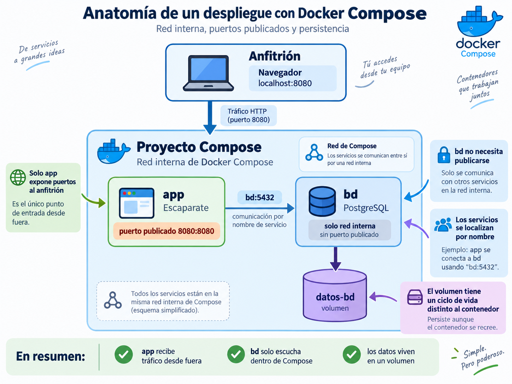

🧵 Docker Compose¶
Descarga de diapositivas
Hasta ahora has ejecutado Escaparate mediante varios comandos: crear una red, arrancar PostgreSQL, pasar variables y poner en marcha la aplicación.
El problema ya no es saber hacerlo una vez. El problema es que toda esa información también forma parte del despliegue. Si solo existe en tu memoria o en el historial del terminal, otra persona tendrá que reconstruir el procedimiento.
Docker Compose permite trasladar esa descripción a un fichero versionado.
Mapa de la sesión
Declarar → conectar → persistir → configurar → esperar → operar
Trabajaremos con dos servicios, app y bd. El objetivo no es añadir más componentes, sino describir correctamente cómo deben ejecutarse y relacionarse.
🧾 1. De comandos a un estado declarado¶
Con contenedores sueltos, el despliegue puede terminar convertido en una secuencia como esta:
| Bash | |
|---|---|
Funciona, pero la arquitectura está escondida dentro de las órdenes.
Compose permite declarar el mismo conjunto en compose.yaml:
| YAML | |
|---|---|
Después:
| Bash | |
|---|---|
La diferencia importante es conceptual:
| Text Only | |
|---|---|
Compose interpreta esa declaración y crea o actualiza los recursos necesarios.
Sintaxis actual
En Compose moderno no necesitas añadir una clave superior version:. Además, utilizaremos docker compose como subcomando de Docker, no el antiguo ejecutable docker-compose.
🧩 2. Servicios, red y puertos¶
Un proyecto Compose se organiza alrededor de:
| YAML | |
|---|---|
Cada entrada representa un servicio:
Los nombres app y bd identifican los servicios y también sirven para que se localicen dentro de la red del proyecto.
Las claves que utilizarás en esta sesión son:
| Clave | Qué describe |
|---|---|
image |
imagen que ejecuta el servicio |
ports |
puertos publicados hacia el anfitrión |
environment |
variables entregadas al contenedor |
volumes |
almacenamiento o ficheros montados |
depends_on |
relación de arranque entre servicios |
healthcheck |
condición para evaluar el estado del servicio |
La arquitectura base de esta sesión puede resumirse así:

2.1. Qué muestra realmente la imagen¶
La figura resume cuatro ideas que vas a usar continuamente en la práctica:
appybdson servicios distintos dentro del mismo proyecto Compose.- Solo
apppublica un puerto hacia el anfitrión, en este caso8080:8080. applocaliza abdpor nombre de servicio, usandobd:5432.- Los datos viven en un volumen con un ciclo de vida distinto al contenedor.
Dicho de otra forma: el navegador entra por app, app se conecta internamente con bd, y bd guarda la información en datos-bd.
2.2. Comunicación interna por nombre¶
Compose crea normalmente una red propia y conecta a ella los servicios.
Por eso app puede utilizar:
sin conocer una dirección IP concreta.
Las IP pueden cambiar al recrear contenedores. El nombre de servicio es la referencia estable dentro de la red de Compose.
Piensa en bd como un nombre interno
Dentro del proyecto Compose, bd funciona como el nombre al que otros servicios pueden dirigirse. Para app, conectarse a PostgreSQL significa conectarse a bd:5432.
2.3. Red interna no significa puerto publicado¶
Entre servicios de la misma red se utiliza el puerto interno del contenedor:
| Text Only | |
|---|---|
Eso no obliga a publicar PostgreSQL hacia el anfitrión.
Para que el navegador llegue a Escaparate sí necesitamos una entrada como:
La diferencia esencial es esta:
- red interna: comunicación entre servicios del propio proyecto;
- puerto publicado: acceso desde fuera del proyecto, por ejemplo desde el navegador o desde el host.
En este despliegue:
appsí publica puerto porque debe recibir tráfico desde fuera;bdno necesita publicar puerto porque solo la usaapp.
Publica solo lo necesario
Cuantos más puertos publiques, más superficie expones hacia el exterior. Si un servicio solo necesita ser consumido por otros contenedores, es preferible dejarlo accesible únicamente en la red interna.
EXPOSE y ports no son equivalentes
EXPOSE en un Dockerfile documenta un puerto esperado. ports en Compose crea realmente una publicación hacia el anfitrión.
💾 3. Persistencia y montajes¶
La capa de escritura de un contenedor desaparece cuando ese contenedor se elimina. Compose permite declarar almacenamiento con un ciclo de vida diferente.
3.1. Volúmenes con nombre¶
Para PostgreSQL utilizaremos un volumen:
| YAML | |
|---|---|
Hay dos partes:
| Text Only | |
|---|---|
PostgreSQL 18
En la imagen oficial de PostgreSQL 18 el volumen se declara en:
| Text Only | |
|---|---|
En versiones 17 y anteriores era habitual montar /var/lib/postgresql/data. No reutilices esa ruta automáticamente para PostgreSQL 18.
El volumen no tiene el mismo ciclo de vida que el contenedor:
| Operación | Contenedores | Red | Volumen |
|---|---|---|---|
docker compose stop |
se conservan | se conserva | se conserva |
docker compose down |
se eliminan | se elimina | se conserva |
docker compose down -v |
se eliminan | se elimina | se elimina |
down -v elimina los datos del volumen
Es útil cuando quieres empezar una práctica desde cero. No debe convertirse en un comando que ejecutes automáticamente sin comprobar qué estás destruyendo.
3.2. Bind mounts¶
También puedes hacer visible dentro de un contenedor un fichero o directorio del anfitrión:
| YAML | |
|---|---|
Aquí:
./config/inicial.sqlpertenece al anfitrión;/docker-entrypoint-initdb.d/00-inicial.sqles la ruta dentro del contenedor;:roindica solo lectura.
Un montaje puede ocultar contenido de la imagen
Si montas un directorio completo sobre una ruta que ya contiene ficheros, esos ficheros quedan ocultos mientras exista el montaje.
Si solo necesitas añadir un fichero, monta ese fichero concreto.
🔧 4. Configuración externa y .env¶
compose.yaml debe poder versionarse. Los valores locales o sensibles de cada equipo, no.
4.1. Interpolación¶
Compose puede sustituir valores antes de crear los contenedores:
| YAML | |
|---|---|
Junto a compose.yaml podemos tener:
| Text Only | |
|---|---|
Por ejemplo:
.env no es un gestor profesional de secretos
Aquí lo utilizamos para separar valores locales del YAML y evitar que entren en Git. En infraestructuras reales existen mecanismos específicos para gestionar secretos.
Puedes inspeccionar la configuración final que Compose ha interpretado con:
| Bash | |
|---|---|
docker compose config puede mostrar valores interpolados
Revisa la salida antes de guardarla o capturarla. Puede contener contraseñas.
Para saber más: exigir una variable
Compose permite fallar con un mensaje claro cuando falta una variable:
| YAML | |
|---|---|
Es útil para evitar que una variable ausente termine sustituida por una cadena vacía.
4.2. ¿Quién sustituye cada variable?¶
Estas dos expresiones no significan exactamente lo mismo:
Con:
| YAML | |
|---|---|
Compose sustituye ${BD_USUARIO} antes de crear el contenedor.
En cambio, $$ permite conservar un signo $ literal para que una variable pueda evaluarse después dentro del contenedor.
Esta diferencia aparecerá en el healthcheck.
❤️ 5. Arrancado no significa preparado¶
Cuando un servicio depende de otro hay dos momentos diferentes:
5.1. depends_on básico¶
La forma corta:
establece una dependencia de arranque: bd debe iniciarse antes que app.
Pero PostgreSQL puede seguir inicializando el directorio de datos cuando el contenedor ya está arrancado.
Por eso una espera fija como:
| Bash | |
|---|---|
es frágil: puede sobrar en una máquina y quedarse corta en otra.
5.2. healthcheck y service_healthy¶
Podemos declarar una condición real:
| YAML | |
|---|---|
pg_isready comprueba si PostgreSQL acepta conexiones.
El uso de:
| Text Only | |
|---|---|
es deliberado: durante la inicialización, la imagen oficial de PostgreSQL utiliza temporalmente un servidor que solo escucha mediante socket local. La comprobación TCP no se dará por correcta hasta que termine esa inicialización y arranque el servidor normal.
Después app puede esperar a esa condición:
El flujo pasa a ser:
| Text Only | |
|---|---|
Por qué aparecen dos signos $
En:
| Text Only | |
|---|---|
$$ evita que Compose intente interpolar la variable. La shell del propio contenedor recibirá $POSTGRES_USER y consultará allí su valor.
5.3. Liveness y readiness¶
Una comprobación también debe responder a una pregunta concreta.
| Comprobación | Pregunta |
|---|---|
| Liveness | ¿el proceso sigue vivo? |
| Readiness | ¿puede atender correctamente? |
Por ejemplo:
En Escaparate:
| Text Only | |
|---|---|
service_healthy permite coordinar el arranque entre servicios. El endpoint de readiness permite comprobar después cuándo la aplicación completa está preparada.
🧰 6. Operar y diagnosticar el conjunto¶
No necesitas memorizar todas las opciones. Asocia cada comando con una pregunta.
| Pregunta | Comando |
|---|---|
| ¿Cómo creo o actualizo el conjunto? | docker compose up -d |
| ¿Qué estado tiene cada servicio? | docker compose ps |
| ¿Qué está ocurriendo? | docker compose logs |
| ¿Qué dice un servicio concreto? | docker compose logs <servicio> |
| ¿Quiero seguir sus logs? | docker compose logs -f <servicio> |
| ¿Quiero detener sin eliminar? | docker compose stop |
| ¿Quiero volver a arrancar? | docker compose start |
| ¿Quiero desmontar el conjunto? | docker compose down |
| ¿Quiero borrar también volúmenes? | docker compose down -v |
| ¿Qué configuración interpretó Compose? | docker compose config |
| ¿Necesito ejecutar algo dentro? | docker compose exec <servicio> ... |
Ante un fallo:
| Text Only | |
|---|---|
Diagnostica antes de editar
No modifiques el YAML al azar. Primero averigua qué estado tiene realmente el conjunto y qué configuración ha interpretado Compose.
⚖️ 7. Qué resuelve Compose y dónde termina¶
Compose es especialmente útil para:
- desarrollo y laboratorios;
- integración de varios servicios;
- pruebas;
- despliegues sencillos sobre un único host Docker.
Su frontera es importante: Compose describe un proyecto sobre un motor Docker; no es un orquestador multinodo.
No resuelve por sí solo problemas como:
- repartir cargas automáticamente entre varios servidores;
- autoescalar según demanda;
- replanificar una carga si desaparece un nodo;
- coordinar actualizaciones progresivas entre muchas réplicas y nodos.
Eso aparecerá más adelante en el módulo.
Construir una vez, desplegar lo construido
En un flujo reproducible, el servidor debería recibir una referencia concreta de una imagen ya construida y validada:
Evitar recompilar en cada servidor reduce diferencias entre entornos.
🎯 Qué debes saber hacer al salir de esta sesión¶
Al terminar deberías poder:
- describir varios servicios mediante
compose.yaml; - utilizar nombres de servicio para la comunicación interna;
- distinguir red interna de puerto publicado;
- declarar un volumen y explicar la diferencia entre
stop,downydown -v; - distinguir un volumen de un bind mount;
- externalizar valores mediante
.envy versionar.env.example; - utilizar
docker compose configpara diagnosticar; - explicar por qué un contenedor iniciado puede no estar preparado;
- declarar un
healthchecky esperar aservice_healthy; - distinguir liveness de readiness;
- operar y diagnosticar un proyecto Compose mediante estado y logs.
✅ Ideas clave¶
Abrir resumen
- Compose convierte una secuencia de órdenes en una descripción declarativa del conjunto.
- Los nombres de servicio funcionan como referencias de red dentro del proyecto.
- Un servicio puede comunicarse internamente sin publicar su puerto hacia el anfitrión.
- El volumen tiene un ciclo de vida distinto al contenedor.
stopconserva contenedores;downlos elimina;down -velimina además los volúmenes..envcontiene valores locales;.env.exampledocumenta la configuración necesaria.${VARIABLE}se interpola por Compose;$$VARIABLEpermite posponer esa evaluación.depends_onbásico no garantiza que un servicio esté preparado.healthcheck+service_healthypermiten esperar una condición real.- Liveness pregunta si algo vive; readiness, si está preparado.
ps,logsyconfigson las primeras herramientas de diagnóstico.- Compose organiza un despliegue sobre un host Docker; no sustituye a un orquestador multinodo.
En la actividad convertirás Escaparate en un conjunto reproducible de dos servicios. Al terminar, aplicación, base de datos, persistencia, configuración y dependencia de arranque quedarán descritas en un fichero versionado.
En el siguiente tema añadiremos una nueva pieza delante de app: Nginx, que pasará a actuar como punto de entrada del despliegue.